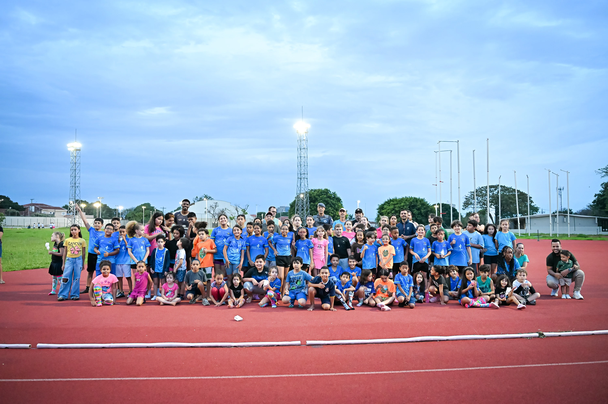

Rotina, dedicação e espírito de equipe: nossos atletas seguem treinando para novos desafios.
Os treinos da ARPA-RP acontecem às quartas e sextas-feiras, no Centro Esportivo do Eldorado, com aulas gratuitas para crianças a partir de 6 anos e adolescentes. À frente desse trabalho estão o professor Peter Camargo e Nayne Camargo, que incentivam cada atleta a descobrir sua força.
PRONTO PARA COMEÇAR?
Chame no nosso WhatsApp e venha fazer parte da ARPA-RP.